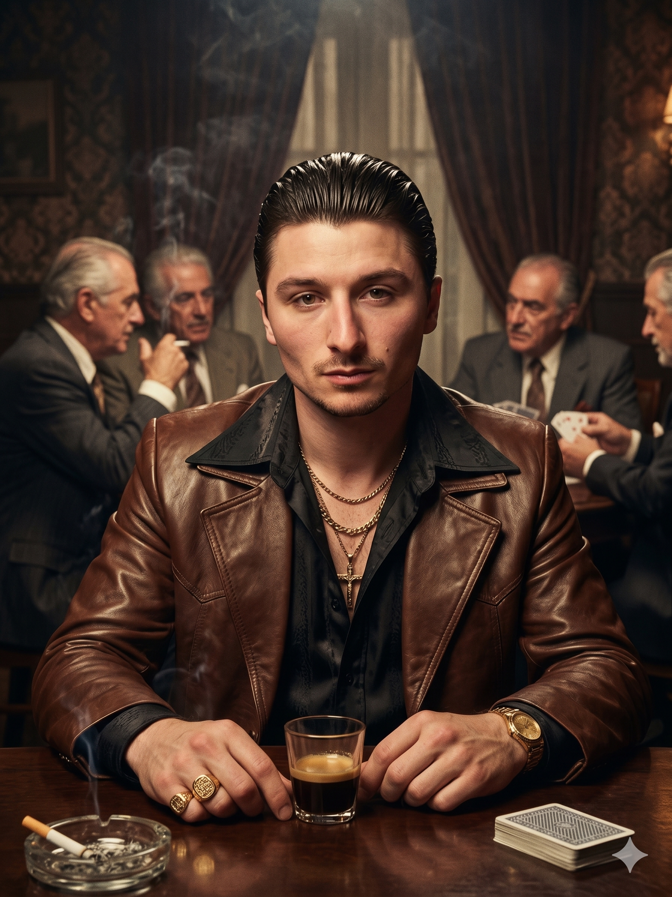
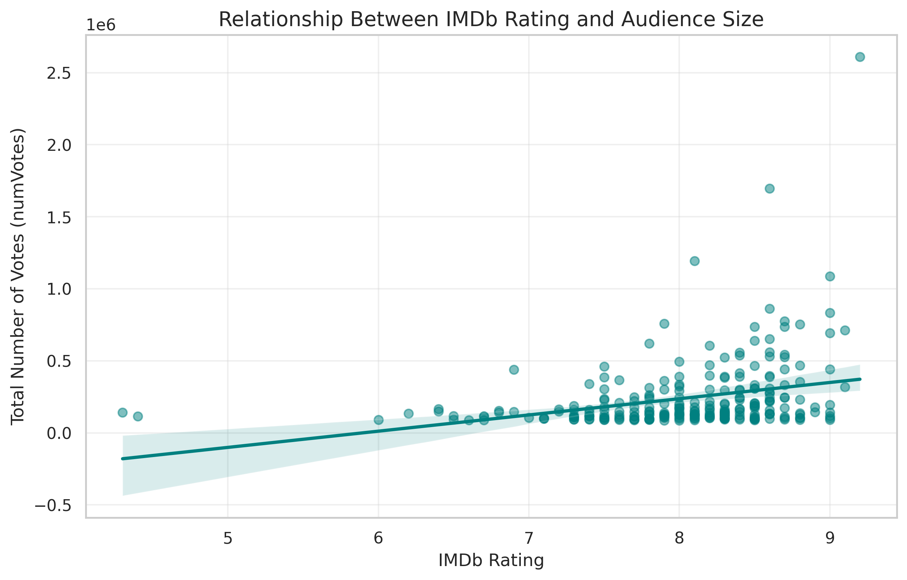
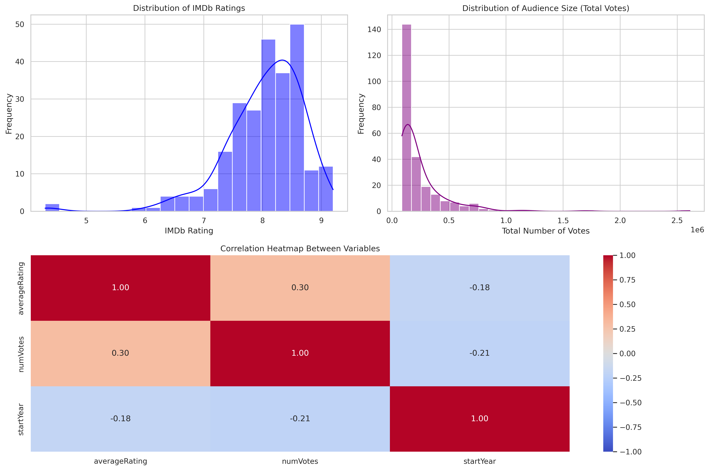
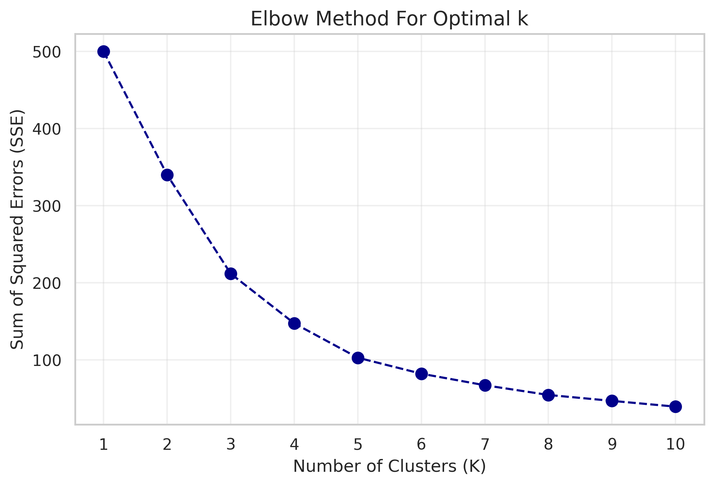
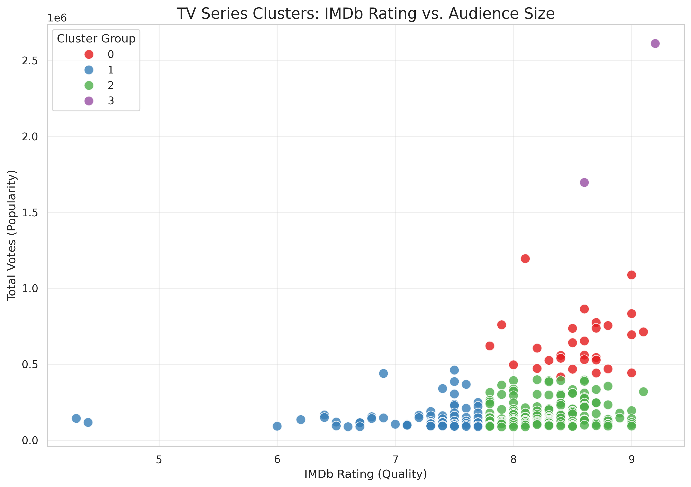

A statistical and machine learning exploration deciphering if critical acclaim directly converts to global mass-market audience volume.
Scroll DownThe main goal of this project is to investigate the relationship between the quality of a TV series and its mainstream popularity. It is often assumed that high-quality content automatically attracts a larger audience. I tested this assumption using real data by analyzing whether a higher IMDb rating correlates with a larger audience size (number of votes).
The ratings show a nearly normal distribution centered around 7.5 to 8.5, indicating a high baseline quality for the selected series. However, the audience size distribution is heavily right-skewed, meaning that while most shows have a moderate audience, a few mega-hits pull in millions of votes as global anomalies.


To confirm visual trends with pure mathematical certainty, I deployed three primary statistical computations:
0.30 (p-value = 0.000). There is a statistically significant but weak positive correlation. High ratings help, but do not guarantee mass popularity.
0.005. Older shows (< 2017) have a significantly higher average rating (8.17) than modern series (7.94).
0.012. Modern series (2017 and newer) possess a statistically significant larger audience volume (numVotes) compared to classic shows, reflecting the global streaming boom.
Using unsupervised machine learning, I segmented the TV landscape into 4 distinct profiles. The Elbow Method indicated that k=4 was the optimal number of clusters for this feature space.

The algorithm successfully divided the dataset into 4 distinct real-world ecosystem profiles:
Exceptional technical quality coupled with massive, outlying vote counts. (e.g., Game of Thrones, Breaking Bad)
High-quality, widely watched series comfortably crossing the standard popularity thresholds. (e.g., The Boys, Sherlock)
Critically acclaimed masterpieces boasting elite ratings, but watched by smaller, highly niche audiences. (e.g., Succession, Severance)
Shows securing massive commercial popularity and viewership despite lower or average critical reviews. (e.g., The Flash, Arrow)

This project successfully applied a combination of statistical validation and machine learning to map the relationship between critical quality and mainstream popularity in television.
Core Takeaways:
Ultimately, this investigation shows that the TV landscape is far more nuanced than "good equals popular." This has implications for streaming platforms (how they recommend), creators (defining success beyond raw numbers), and audiences (discovering quality outside the mainstream anomalies).
Future Directions: While successful, this project could be expanded by integrating additional data like **streaming hours**, **marketing budget data**, and **detailed genre analysis** to further decipher what drives a show from being a critically acclaimed "Hidden Gem" into a global "Mega Phenomenon."